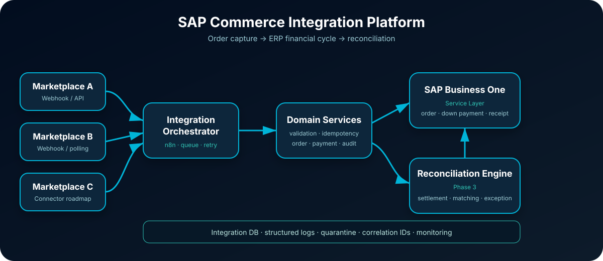

Integração comercial
Cliente, itens e Pedido de Venda criados automaticamente no ERP.
ARCHITECTURE CASE STUDY
Plataforma de integração ponta a ponta entre canais de e-commerce e SAP Business One, cobrindo o ciclo comercial, a automação financeira e a evolução para conciliação por API.

Cliente, itens e Pedido de Venda criados automaticamente no ERP.
Adiantamento, recebimento e referência de pagamento com idempotência.
Staging, matching e tratamento de divergências orientado a exceções.
Retry, feature flags, quarentena, audit trail e observabilidade.